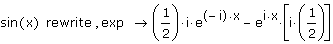
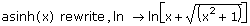
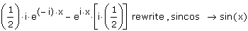
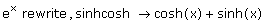

Rewriting Expressions |
To rewrite an expression in terms of elementary functions, select the function and either:
- or -
Then type a modifier, specifying the elementary functions to use in rewriting the expression, in the placeholder that appears, and press [Enter].
The modifiers in the following table specify the elementary functions to use when rewriting the expression:
| Modifier | Expression Type | Example |
| exp | Exponential |  |
| ln | Natural Logarithm |  |
| log | Logarithm Base 10 | ln(7) rewrite , log → log(7)·log(10,e) |
| sincos | Trigonometric |  |
| sinhcosh | Hyperbolic |  |